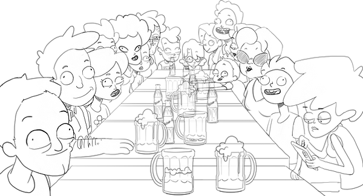

Visual Development


Serie episódica dirigida a adolescentes y jóvenes adultos sobre la primera experiencia laboral de una camarera en un restaurante de alta demanda.
Inspirada en experiencias reales, la serie mezcla humor, drama cotidiano y situaciones absurdas para mostrar la realidad detrás de trabajar cara al público.
Entre clientes imposibles, compañeros cambiantes, errores de novata y jornadas interminables, Sara tendrá que sobrevivir a un verano más.

Storyboard sequence developed for the project.
Entre Mesas continues to evolve through additional episode concepts, visual development, character exploration and future production planning.
Created & Designed by Mar Aguilar Serrats